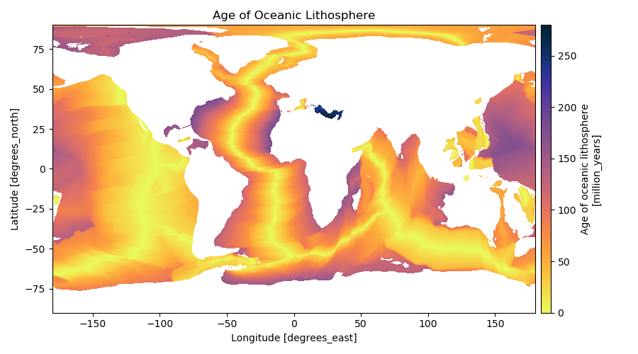

Note
Click here to download the full example code
Age of the Oceanic Lithosphere¶
Global grids of the age of the oceanic lithosphere produced by [Muller2008]. Available in 2 and 6 arc-minute resolutions and include grids of the age uncertainty. More information at the NOAA NCEI and EarthByte websites.
Out:
<xarray.Dataset>
Dimensions: (latitude: 1801, longitude: 3601)
Coordinates:
* longitude (longitude) float32 -180.0 -179.9 -179.8 ... 179.8 179.9 180.0
* latitude (latitude) float32 -90.0 -89.9 -89.8 -89.7 ... 89.8 89.9 90.0
Data variables:
age (latitude, longitude) float32 nan nan nan ... 55.42 55.42 55.42
uncertainty (latitude, longitude) float32 nan nan nan ... 15.0 15.0 15.0
Attributes:
title: Age of oceanic lithosphere
doi: 10.1029/2007GC001743
import rockhound as rh
import matplotlib.pyplot as plt
import cmocean
# Load the age and uncertainty grids in the default 6 arc-minute resolution
grid = rh.fetch_seafloor_age()
print(grid)
# Plot the age grid.
# We're not using a map projection to speed up the plotting but this NOT recommended.
plt.figure(figsize=(9, 5))
ax = plt.subplot(111)
grid.age.plot.pcolormesh(
cmap=cmocean.cm.thermal_r, cbar_kwargs=dict(pad=0.01, aspect=30), ax=ax
)
ax.set_title("Age of Oceanic Lithosphere")
plt.tight_layout()
plt.show()
Total running time of the script: ( 0 minutes 3.327 seconds)